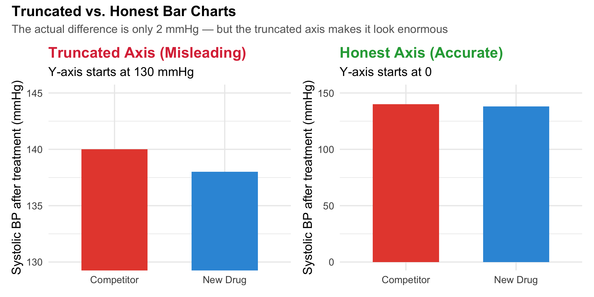
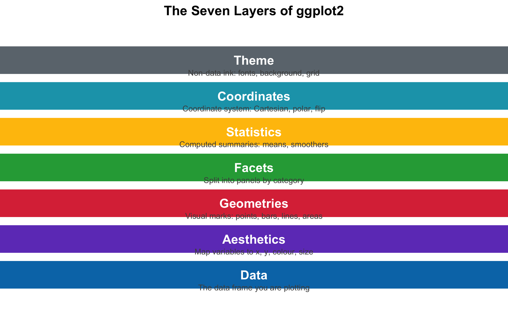
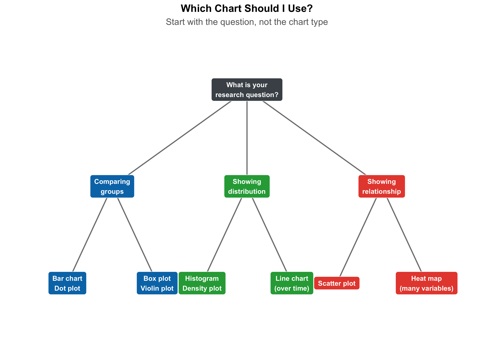
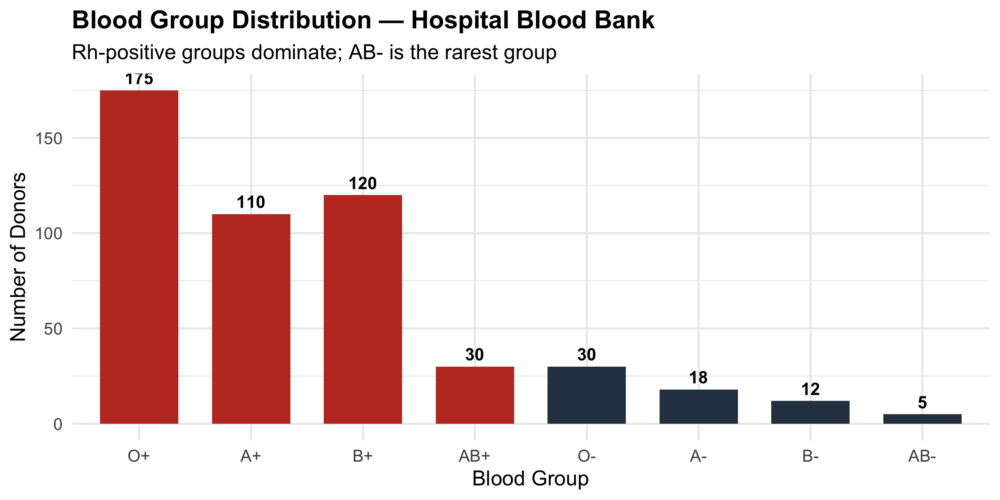
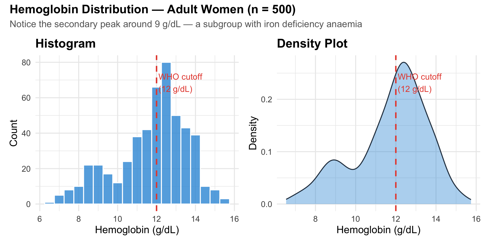
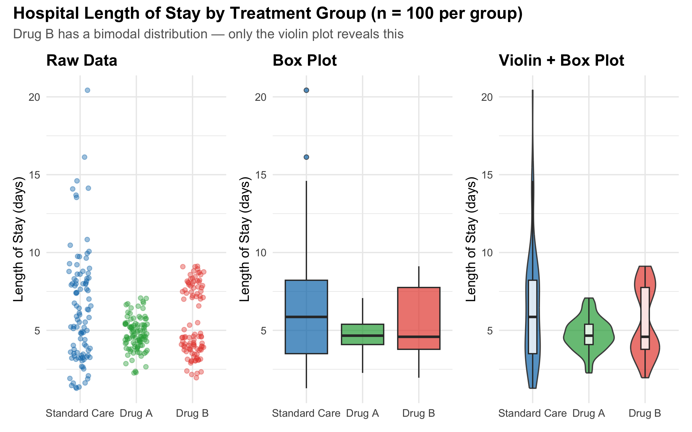
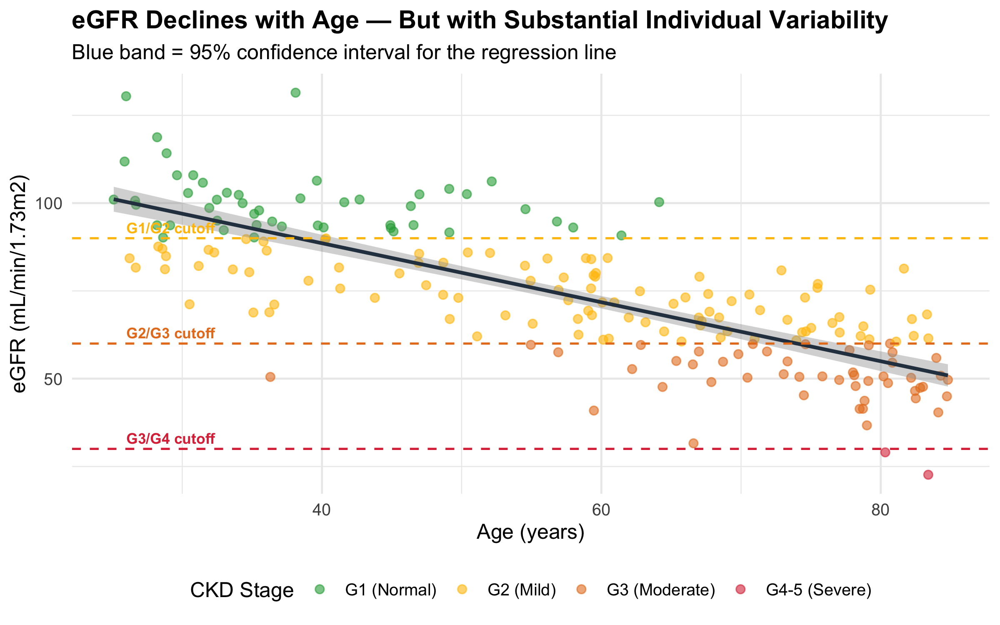
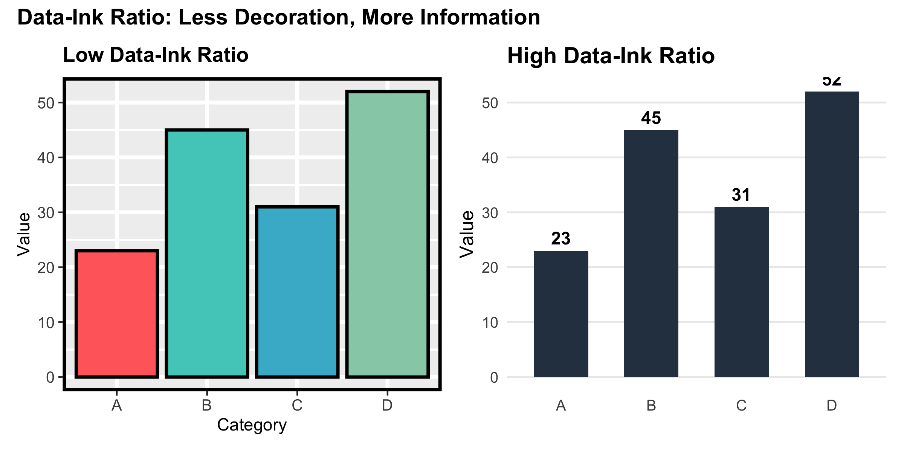
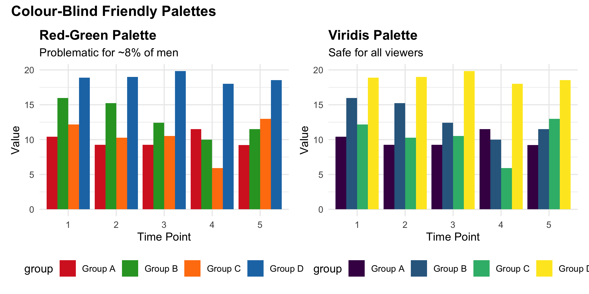
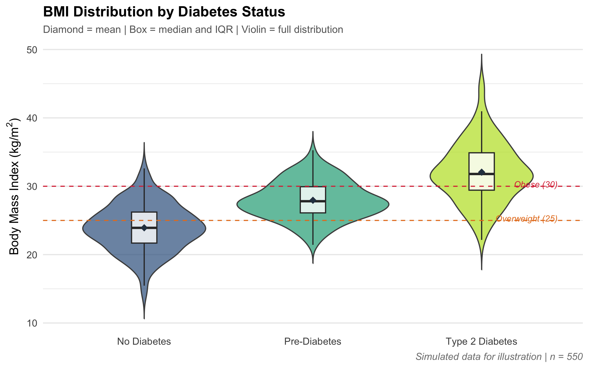

Identify principles of honest data visualization and recognise common graphical distortions
Select appropriate plot types based on data type and research question
Construct bar charts, histograms, box plots, violin plots, scatter plots, and line graphs using ggplot2
Explain the grammar of graphics as a layered system
Apply Tufte’s principles of data-ink ratio to clinical figures
Design plots that prioritise clarity, accuracy, and accessibility (including colour-blind palettes)
Critique visualizations from published clinical literature
4.2 Clinical Hook: The Pharma Pitch That Fooled Everyone
Same Data, Very Different Impressions
A pharmaceutical company presents a bar chart at a conference claiming their new antihypertensive drug reduces systolic blood pressure “dramatically more” than the competitor. The audience is impressed — the bars look strikingly different.
But look at the y-axis: it starts at 130 mmHg, not at 0. The actual difference? Their drug reduces SBP from 150 to 138 mmHg (12 mmHg reduction) while the competitor reduces it from 150 to 140 mmHg (10 mmHg reduction). A 2 mmHg difference, inflated to look enormous by truncating the axis.
This is not hypothetical — truncated axes are one of the most common distortion techniques in pharmaceutical advertisements, news graphics, and even peer-reviewed journals. In this module, you will learn to see through these tricks and to create honest, effective visualizations.
Code
bp_data<-tibble( Drug =c("New Drug", "Competitor"), SBP_reduction =c(138, 140))p_trunc<-ggplot(bp_data, aes(x =Drug, y =SBP_reduction, fill =Drug))+geom_col(width =0.6, show.legend =FALSE)+scale_fill_manual(values =c("#e74c3c", "#3498db"))+coord_cartesian(ylim =c(130, 145))+labs( title ="Truncated Axis (Misleading)", subtitle ="Y-axis starts at 130 mmHg", y ="Systolic BP after treatment (mmHg)", x =NULL)+theme_minimal(base_size =12)+theme(plot.title =element_text(face ="bold", colour ="#dc3545"))p_honest<-ggplot(bp_data, aes(x =Drug, y =SBP_reduction, fill =Drug))+geom_col(width =0.6, show.legend =FALSE)+scale_fill_manual(values =c("#e74c3c", "#3498db"))+coord_cartesian(ylim =c(0, 150))+labs( title ="Honest Axis (Accurate)", subtitle ="Y-axis starts at 0", y ="Systolic BP after treatment (mmHg)", x =NULL)+theme_minimal(base_size =12)+theme(plot.title =element_text(face ="bold", colour ="#28a745"))p_trunc+p_honest+plot_annotation( title ="Truncated vs. Honest Bar Charts", subtitle ="The actual difference is only 2 mmHg — but the truncated axis makes it look enormous", theme =theme( plot.title =element_text(face ="bold", size =14), plot.subtitle =element_text(colour ="grey40", size =11)))

Figure 4.1: The same data, two very different visual impressions. The truncated axis (left) exaggerates a small difference.
Truncated Axes on Bar Charts
Bar charts encode values as lengths. When the y-axis does not start at zero, the visual length of the bar no longer corresponds to the actual value, violating the most basic principle of bar charts. This is the single most common distortion in medical graphics. Rule: bar charts must start at zero. If the differences are too small to see, use a dot plot or a difference plot instead — do not truncate.
Note: line charts and scatter plots can use truncated axes because they encode position, not length.
4.3 The Grammar of Graphics: How ggplot2 Thinks
Before diving into specific chart types, let us understand the system behind ggplot2. Every plot is built from the same set of components, layered on top of each other like transparencies on an overhead projector.
The Grammar of Graphics (Wilkinson, 2005; Wickham, 2010)
Every ggplot2 figure is composed of seven layers:
Data — the data frame you are plotting
Aesthetics (aes()) — which variables map to x, y, colour, size, shape
Geometries (geom_*) — what visual marks represent the data (points, bars, lines)
Facets (facet_*) — split the plot into panels by a categorical variable
Coordinates (coord_*) — the coordinate system (Cartesian, polar, flipped)
Theme (theme_*) — the non-data appearance (fonts, colours, grid lines)
The power of this system: you can swap any layer independently. Change geom_point() to geom_line() and the same data becomes a line chart. Add facet_wrap(~group) and you get small multiples. This modularity makes ggplot2 extraordinarily flexible.
Code
layers<-tibble( layer =factor(c("Theme", "Coordinates", "Statistics", "Facets","Geometries", "Aesthetics", "Data"), levels =c("Theme", "Coordinates", "Statistics", "Facets","Geometries", "Aesthetics", "Data")), y =7:1, description =c("Non-data ink: fonts, background, grid","Coordinate system: Cartesian, polar, flip","Computed summaries: means, smoothers","Split into panels by category","Visual marks: points, bars, lines, areas","Map variables to x, y, colour, size","The data frame you are plotting"), colour =c("#6c757d", "#17a2b8", "#ffc107", "#28a745","#dc3545", "#6f42c1", "#0077b6"))ggplot(layers, aes(x =1, y =y))+geom_tile(aes(fill =colour), width =3.5, height =0.85, colour ="white", linewidth =1.5)+geom_text(aes(x =1, label =layer), fontface ="bold", size =5, colour ="white")+geom_text(aes(x =1, y =y-0.35, label =description), size =3.2, colour ="grey30")+scale_fill_identity()+coord_cartesian(xlim =c(-0.5, 2.5), ylim =c(0.2, 7.8))+labs(title ="The Seven Layers of ggplot2")+theme_void(base_size =13)+theme(plot.title =element_text(face ="bold", hjust =0.5, size =15))

Figure 4.2: The seven layers of the Grammar of Graphics, shown as a stacked diagram.
4.4 Choosing the Right Chart: A Decision Framework
The most important decision in visualization is not how to draw the chart but which chart to draw. The wrong chart type will mislead no matter how pretty it looks.
Code
nodes<-tibble( x =c(5, # Start: What's your goal?2, 5, 8, # Level 2: Comparison, Distribution, Relationship1, 3, # Comparison subtypes4, 6, # Distribution subtypes7, 9), # Relationship subtypes y =c(6,4, 4, 4,2, 2,2, 2,2, 2), label =c("What is your\nresearch question?","Comparing\ngroups", "Showing\ndistribution", "Showing\nrelationship","Bar chart\nDot plot", "Box plot\nViolin plot","Histogram\nDensity plot", "Line chart\n(over time)","Scatter plot", "Heat map\n(many variables)"), type =c("question","goal", "goal", "goal","chart", "chart", "chart", "chart", "chart", "chart"), fill =c("#495057","#0077b6", "#28a745", "#e74c3c","#0077b6", "#0077b6", "#28a745", "#28a745", "#e74c3c", "#e74c3c"))edges<-tibble( x =c(5, 5, 5, 2, 2, 5, 5, 8, 8), y =c(6, 6, 6, 4, 4, 4, 4, 4, 4), xend =c(2, 5, 8, 1, 3, 4, 6, 7, 9), yend =c(4, 4, 4, 2, 2, 2, 2, 2, 2))ggplot()+geom_segment(data =edges,aes(x =x, y =y, xend =xend, yend =yend), colour ="grey50", linewidth =0.8, arrow =arrow(length =unit(0.15, "cm"), type ="closed"))+geom_label(data =nodes,aes(x =x, y =y, label =label, fill =fill), colour ="white", fontface ="bold", size =3.5, label.padding =unit(0.5, "lines"), label.r =unit(0.3, "lines"))+scale_fill_identity()+coord_cartesian(xlim =c(0, 10), ylim =c(1, 7))+labs(title ="Which Chart Should I Use?", subtitle ="Start with the question, not the chart type")+theme_void(base_size =13)+theme( plot.title =element_text(face ="bold", hjust =0.5, size =15), plot.subtitle =element_text(hjust =0.5, colour ="grey40"))

Figure 4.3: A decision framework for choosing the right chart type based on your data and research question.
Quick Reference: Data Type to Chart Type
Your data
Your question
Best chart
1 categorical variable
How many in each group?
Bar chart
1 continuous variable
What does the distribution look like?
Histogram, density
1 categorical + 1 continuous
Do groups differ?
Box plot, violin plot
2 continuous variables
Is there a relationship?
Scatter plot
Continuous over time
How does it change?
Line chart
Multiple groups over time
Trends by group?
Line chart with colour / facets
3+ variables
Complex patterns?
Heat map, faceted plots
For interactive guidance, explore From Data to Viz — a beautiful flowchart that helps you navigate from your data structure to the ideal chart.
4.5 Chart Types with Clinical Examples
Bar Charts: Counting and Comparing Categories
Bar charts are the workhorses of categorical data — simple, universally understood, and nearly impossible to misread (as long as the axis starts at zero).
Code
blood_groups<-tibble( group =factor(c("O+", "A+", "B+", "AB+", "O-", "A-", "B-", "AB-"), levels =c("O+", "A+", "B+", "AB+", "O-", "A-", "B-", "AB-")), count =c(175, 110, 120, 30, 30, 18, 12, 5))ggplot(blood_groups, aes(x =group, y =count, fill =group))+geom_col(show.legend =FALSE, width =0.7)+geom_text(aes(label =count), vjust =-0.5, fontface ="bold", size =3.5)+scale_fill_manual(values =c(rep("#c0392b", 4), rep("#2c3e50", 4)))+labs( title ="Blood Group Distribution — Hospital Blood Bank", subtitle ="Rh-positive groups dominate; AB- is the rarest group", x ="Blood Group", y ="Number of Donors")+theme_minimal(base_size =12)+theme(plot.title =element_text(face ="bold"))

Figure 4.4: Distribution of blood groups in a hospital blood bank (n = 500). Note the y-axis starts at zero.
Dynamite Plots (Bar Chart + Error Bar for Continuous Data)
A common practice in medical journals is to show a bar chart with an error bar on top (mean + SD or SEM). This “dynamite plot” hides the actual distribution — 50 data points or 5000, bimodal or uniform, the bar chart looks the same. Never use bar charts for continuous data. Use box plots, violin plots, or dot plots instead.
Histograms and Density Plots: Seeing the Distribution
Histograms divide continuous data into bins and count observations in each. Density plots smooth the histogram into a continuous curve.
Code
hb_data<-tibble( hb =c(rnorm(400, mean =12.5, sd =1.2),rnorm(100, mean =9.0, sd =1.0)))p_hist<-ggplot(hb_data, aes(x =hb))+geom_histogram(binwidth =0.5, fill ="#3498db", colour ="white", alpha =0.8)+geom_vline(xintercept =12, linetype ="dashed", colour ="#e74c3c", linewidth =0.8)+annotate("text", x =12.1, y =Inf, vjust =2, hjust =0, label ="WHO cutoff\n(12 g/dL)", colour ="#e74c3c", size =3.5)+labs(title ="Histogram", x ="Hemoglobin (g/dL)", y ="Count")+theme_minimal(base_size =12)+theme(plot.title =element_text(face ="bold"))p_dens<-ggplot(hb_data, aes(x =hb))+geom_density(fill ="#3498db", alpha =0.4, colour ="#2c3e50")+geom_vline(xintercept =12, linetype ="dashed", colour ="#e74c3c", linewidth =0.8)+annotate("text", x =12.1, y =Inf, vjust =2, hjust =0, label ="WHO cutoff\n(12 g/dL)", colour ="#e74c3c", size =3.5)+labs(title ="Density Plot", x ="Hemoglobin (g/dL)", y ="Density")+theme_minimal(base_size =12)+theme(plot.title =element_text(face ="bold"))p_hist+p_dens+plot_annotation( title ="Hemoglobin Distribution — Adult Women (n = 500)", subtitle ="Notice the secondary peak around 9 g/dL — a subgroup with iron deficiency anaemia", theme =theme( plot.title =element_text(face ="bold", size =14), plot.subtitle =element_text(colour ="grey40", size =11)))

Figure 4.5: Hemoglobin distribution in 500 adult women — histogram and density plot show the same data in different ways.
Bin Width Matters
The choice of bin width in a histogram dramatically affects what you see. Too wide: you lose detail and miss subgroups. Too narrow: you see random noise. A good rule of thumb: start with the Freedman-Diaconis rule (the ggplot2 default) and then adjust manually if needed. Always try at least 2-3 bin widths before settling on one.
Box Plots and Violin Plots: Comparing Distributions Across Groups
When you want to compare a continuous variable across groups, box plots and violin plots are your best options. We covered these in Module 2 with CRP data — here we see additional clinical examples and discuss when to choose one over the other.
Code
treatment_data<-tibble( group =rep(c("Standard Care", "Drug A", "Drug B"), each =100), los =c(rgamma(100, shape =3, rate =0.5), # Standard: right skewedrnorm(100, mean =5, sd =1.2), # Drug A: roughly symmetricc(rnorm(60, mean =4, sd =0.8), # Drug B: bimodalrnorm(40, mean =8, sd =0.8))))%>%mutate(group =factor(group, levels =c("Standard Care", "Drug A", "Drug B")))p_points<-ggplot(treatment_data, aes(x =group, y =los, colour =group))+geom_jitter(width =0.2, alpha =0.4, size =1.5)+scale_colour_manual(values =c("#0077b6", "#28a745", "#e74c3c"))+labs(title ="Raw Data", y ="Length of Stay (days)", x =NULL)+theme_minimal(base_size =11)+theme(plot.title =element_text(face ="bold"), legend.position ="none")p_box<-ggplot(treatment_data, aes(x =group, y =los, fill =group))+geom_boxplot(alpha =0.7, outlier.shape =21)+scale_fill_manual(values =c("#0077b6", "#28a745", "#e74c3c"))+labs(title ="Box Plot", y ="Length of Stay (days)", x =NULL)+theme_minimal(base_size =11)+theme(plot.title =element_text(face ="bold"), legend.position ="none")p_violin<-ggplot(treatment_data, aes(x =group, y =los, fill =group))+geom_violin(alpha =0.7, colour ="grey30")+geom_boxplot(width =0.15, fill ="white", alpha =0.8, outlier.shape =NA)+scale_fill_manual(values =c("#0077b6", "#28a745", "#e74c3c"))+labs(title ="Violin + Box Plot", y ="Length of Stay (days)", x =NULL)+theme_minimal(base_size =11)+theme(plot.title =element_text(face ="bold"), legend.position ="none")p_points+p_box+p_violin+plot_annotation( title ="Hospital Length of Stay by Treatment Group (n = 100 per group)", subtitle ="Drug B has a bimodal distribution — only the violin plot reveals this", theme =theme( plot.title =element_text(face ="bold", size =14), plot.subtitle =element_text(colour ="grey40", size =11)))

Figure 4.6: Three representations of the same data: raw points, box plot, and violin plot. Each reveals different aspects of the distribution.
Box Plot vs. Violin Plot: When to Use Which
Feature
Box plot
Violin plot
Shows median and quartiles
Yes (explicitly)
Only if overlaid
Shows full distribution shape
No
Yes
Reveals bimodality
No
Yes
Easy to compare many groups
Yes
Gets crowded beyond 5-6 groups
Familiar to clinical audiences
Yes
Less familiar
Best used when…
You need a quick, standard summary
Distribution shape matters for interpretation
Best practice: overlay a narrow box plot inside the violin to get the best of both worlds, as shown in the right panel above.
Scatter Plots: Revealing Relationships
Scatter plots show the relationship between two continuous variables — the foundation for correlation and regression analysis.
Code
gfr_data<-tibble( age =runif(200, 25, 85), egfr =120-0.8*age+rnorm(200, 0, 12), ckd_stage =case_when(egfr>=90~"G1 (Normal)",egfr>=60~"G2 (Mild)",egfr>=30~"G3 (Moderate)",TRUE~"G4-5 (Severe)"))%>%mutate(ckd_stage =factor(ckd_stage, levels =c("G1 (Normal)", "G2 (Mild)","G3 (Moderate)", "G4-5 (Severe)")))ggplot(gfr_data, aes(x =age, y =egfr))+geom_point(aes(colour =ckd_stage), alpha =0.6, size =2)+geom_smooth(method ="lm", colour ="#2c3e50", linewidth =1, se =TRUE)+geom_hline(yintercept =c(90, 60, 30), linetype ="dashed", colour =c("#ffc107", "#e67e22", "#dc3545"), linewidth =0.6)+annotate("text", x =26, y =93, label ="G1/G2 cutoff", hjust =0, colour ="#ffc107", size =3, fontface ="bold")+annotate("text", x =26, y =63, label ="G2/G3 cutoff", hjust =0, colour ="#e67e22", size =3, fontface ="bold")+annotate("text", x =26, y =33, label ="G3/G4 cutoff", hjust =0, colour ="#dc3545", size =3, fontface ="bold")+scale_colour_manual(values =c("#28a745", "#ffc107", "#e67e22", "#dc3545"))+labs( title ="eGFR Declines with Age — But with Substantial Individual Variability", subtitle ="Blue band = 95% confidence interval for the regression line", x ="Age (years)", y ="eGFR (mL/min/1.73m2)", colour ="CKD Stage")+theme_minimal(base_size =12)+theme( plot.title =element_text(face ="bold"), legend.position ="bottom")

Figure 4.7: Age vs. estimated GFR (eGFR) in 200 patients. The decline with age is clearly visible, with considerable person-to-person variability.
Scatter Plot Enhancements for Large Datasets
When you have thousands of points, a standard scatter plot becomes an unreadable blob (overplotting). Solutions include reducing alpha (transparency), using hexagonal binning (geom_hex()), 2D density contours (geom_density_2d()), or marginal distributions with the ggExtra package. Always consider which technique reveals the most useful pattern in your particular dataset.
Line Charts: Trends Over Time
Line charts connect sequential observations and are the natural choice for time-series data, dose-response curves, and patient trajectories.
Figure 4.8: HbA1c trajectory over 12 months in two treatment arms of a diabetes trial. The ribbon shows 95% CI around the group mean.
Connecting Unrelated Points
Line charts imply continuity — the viewer’s eye follows the line and assumes the variable changed smoothly between measured points. This is appropriate for time-series data (blood pressure over days, HbA1c over months) but not for categorical comparisons. If your x-axis is “Hospital A, Hospital B, Hospital C”, a line chart implies a continuous transition from A to B to C, which makes no sense. Use a bar chart or dot plot instead.
4.6 Principles of Honest Visualization
Edward Tufte, the pioneer of data visualization, established principles that remain the gold standard for scientific graphics [1].
Data-Ink Ratio
Tufte’s Data-Ink Ratio
\[\text{Data-ink ratio} = \frac{\text{Ink used to display data}}{\text{Total ink used in the graphic}}\]
The goal is to maximise this ratio — every drop of ink should represent data. Remove grid lines, background colours, borders, and decorative elements that do not convey information. A figure should be as simple as possible, but not simpler.
Code
demo_data<-tibble( category =c("A", "B", "C", "D"), value =c(23, 45, 31, 52))p_cluttered<-ggplot(demo_data, aes(x =category, y =value, fill =category))+geom_col(show.legend =FALSE, colour ="black", linewidth =1)+scale_fill_manual(values =c("#ff6b6b", "#4ecdc4", "#45b7d1", "#96ceb4"))+labs(title ="Low Data-Ink Ratio", y ="Value", x ="Category")+theme( panel.background =element_rect(fill ="#f0f0f0"), panel.grid.major =element_line(colour ="white", linewidth =1.2), panel.grid.minor =element_line(colour ="white", linewidth =0.6), panel.border =element_rect(colour ="black", fill =NA, linewidth =2), plot.title =element_text(face ="bold"), axis.text =element_text(size =10))p_clean<-ggplot(demo_data, aes(x =category, y =value))+geom_col(fill ="#2c3e50", width =0.6)+geom_text(aes(label =value), vjust =-0.5, fontface ="bold", size =4)+labs(title ="High Data-Ink Ratio", y ="Value", x =NULL)+theme_minimal(base_size =12)+theme( panel.grid.major.x =element_blank(), panel.grid.minor =element_blank(), plot.title =element_text(face ="bold"))p_cluttered+p_clean+plot_annotation( title ="Data-Ink Ratio: Less Decoration, More Information", theme =theme(plot.title =element_text(face ="bold", size =14)))

Figure 4.9: The same data with low data-ink ratio (left, cluttered with non-data elements) and high data-ink ratio (right, clean and focused).
Common Distortion Techniques to Watch For
Table 4.1: Common graphical distortions and how to spot them
Distortion
How It Misleads
How to Fix It
Truncated axis
Exaggerates small differences by not starting the axis at zero
Start bar chart axes at zero; use dot plots for small differences
Dual y-axes
Creates false apparent correlations between unrelated variables
Use two separate panels or normalise to a common scale
3D effects
Perspective distorts bar heights and slice sizes
Use 2D plots — always
Area/volume encoding
Doubling a circle's radius quadruples its area, exaggerating differences
Map values to position (dot plot) or length (bar chart), not area
Cherry-picked time range
Selecting a specific time window to show a trend that disappears in the full data
Show the full time range; use annotations to highlight the period of interest
Unlabelled axes
Without units or scale, any difference can look large or small
Always label both axes with variable name and units
4.7 Accessibility: Designing for Everyone
Approximately 8% of men and 0.5% of women have some form of colour vision deficiency. A red-green colour scheme — the most common in medical graphics — is the worst possible choice for accessibility.
Code
set.seed(99)cb_data<-tibble( x =rep(1:5, each =4), group =rep(c("Group A", "Group B", "Group C", "Group D"), 5), y =rnorm(20, mean =rep(c(10, 15, 12, 18), 5), sd =2))p_rg<-ggplot(cb_data, aes(x =factor(x), y =y, fill =group))+geom_col(position ="dodge")+scale_fill_manual(values =c("#d62728", "#2ca02c", "#ff7f0e", "#1f77b4"))+labs(title ="Red-Green Palette", subtitle ="Problematic for ~8% of men", x ="Time Point", y ="Value")+theme_minimal(base_size =11)+theme(plot.title =element_text(face ="bold"), legend.position ="bottom")p_viridis<-ggplot(cb_data, aes(x =factor(x), y =y, fill =group))+geom_col(position ="dodge")+scale_fill_viridis_d(option ="D")+labs(title ="Viridis Palette", subtitle ="Safe for all viewers", x ="Time Point", y ="Value")+theme_minimal(base_size =11)+theme(plot.title =element_text(face ="bold"), legend.position ="bottom")p_rg+p_viridis+plot_annotation( title ="Colour-Blind Friendly Palettes", theme =theme(plot.title =element_text(face ="bold", size =14)))

Figure 4.10: The viridis palette (right) remains distinguishable under all forms of colour vision deficiency. The red-green palette (left) does not.
Accessibility Checklist for Clinical Figures
Use colour-blind friendly palettes: viridis, cividis, or okabe_ito (available in scales::pal_okabe_ito())
Don’t rely on colour alone: use different shapes, line types, or direct labels in addition to colour
Ensure sufficient contrast: light text on dark backgrounds (or vice versa) with a contrast ratio of at least 4.5:1
Use readable font sizes: axis labels at least 10pt, titles at least 12pt in the final figure
Add alt-text: in Quarto, use #| fig-alt: to describe the figure for screen readers
Test your palette: the colorblindr R package can simulate how your figure appears under different forms of colour vision deficiency
4.8 Putting It All Together: A Publication-Ready Figure
Let us build a complete clinical figure step by step, applying everything we have learned — grammar of graphics, honest axes, clean design, and accessible colours.
Code
set.seed(42)bmi_data<-tibble( diabetes =rep(c("No Diabetes", "Pre-Diabetes", "Type 2 Diabetes"), c(300, 150, 100)), bmi =c(rnorm(300, 24, 3.5),rnorm(150, 28, 3.0),rnorm(100, 32, 4.0)))%>%mutate(diabetes =factor(diabetes, levels =c("No Diabetes", "Pre-Diabetes", "Type 2 Diabetes")))ggplot(bmi_data, aes(x =diabetes, y =bmi, fill =diabetes))+geom_violin(alpha =0.7, colour ="grey30", trim =FALSE)+geom_boxplot(width =0.15, fill ="white", alpha =0.8, outlier.shape =NA)+stat_summary(fun =mean, geom ="point", shape =18, size =3, colour ="#2c3e50")+geom_hline(yintercept =c(25, 30), linetype ="dashed", colour =c("#e67e22", "#dc3545"), linewidth =0.5)+annotate("text", x =3.45, y =25.3, label ="Overweight (25)", colour ="#e67e22", size =3, fontface ="italic", hjust =1)+annotate("text", x =3.45, y =30.3, label ="Obese (30)", colour ="#dc3545", size =3, fontface ="italic", hjust =1)+scale_fill_viridis_d(option ="D", begin =0.3, end =0.9)+labs( title ="BMI Distribution by Diabetes Status", subtitle ="Diamond = mean | Box = median and IQR | Violin = full distribution", x =NULL, y =expression("Body Mass Index (kg/m"^2*")"), caption ="Simulated data for illustration | n = 550")+theme_minimal(base_size =12)+theme( plot.title =element_text(face ="bold", size =14), plot.subtitle =element_text(colour ="grey40", size =10), plot.caption =element_text(colour ="grey50", face ="italic"), legend.position ="none", panel.grid.major.x =element_blank())

Figure 4.11: A publication-ready figure showing BMI distribution across diabetes status, with appropriate annotations and clean design.
4.9 Visualization Tools and Resources
Books:
Edward Tufte, The Visual Display of Quantitative Information (2nd ed.) — the bible of data visualization
Kieran Healy, Data Visualization: A Practical Introduction — modern, R-focused, free online
Q1. A pharmaceutical company shows a bar chart comparing mean systolic BP reduction: Drug X = 14 mmHg, Drug Y = 12 mmHg. The y-axis starts at 10 mmHg. What is the primary concern with this figure?
✘ A. The sample size is not mentioned — While sample size matters, the primary concern here is the visual distortion. The truncated axis makes a 2 mmHg difference look like Drug X is ‘twice as effective’.
✔ B. The truncated y-axis exaggerates the difference between drugs — Correct! When the y-axis starts at 10 instead of 0, the visual length of the Drug X bar appears much larger relative to Drug Y. The actual difference is only 2 mmHg, but the truncated axis makes it look enormous. Bar charts must always start at zero.
✘ C. Bar charts should not be used for continuous outcomes — While dynamite plots (bar + error bar) for continuous data are problematic, comparing mean reductions across two groups with a bar chart is acceptable if the axis starts at zero and confidence intervals are shown.
✘ D. The two drugs should be shown on the same bar — Stacking the two drugs on one bar would make comparison harder, not easier. Side-by-side bars are correct; the issue is the truncated axis.
Q2. A researcher presents box plots comparing serum uric acid levels between gout patients and healthy controls. The gout group’s box is very short with many outliers above the upper whisker. What does this pattern indicate?
✘ A. The data has too many errors and needs cleaning — Points beyond the whiskers are not necessarily errors. In clinical data, extreme values often represent real pathology (e.g., severe gout with very high uric acid). Do not automatically delete outliers.
✘ B. The median is unreliable for this group — The median is actually more robust to outliers than the mean. A short box means the middle 50% of data is tightly clustered, which is useful information.
✔ C. The distribution is right-skewed with most values clustered tightly and a long upper tail — Correct! A short box means the IQR is small (middle 50% are clustered together). Many points above the upper whisker indicate a long right tail. Most gout patients have moderately elevated uric acid, but some have extremely high values. This right-skewed pattern is classic for clinical biomarkers in disease states.
✘ D. The sample size is too small — Box plot appearance depends on the distribution, not just sample size. A short box with upper outliers indicates right skew regardless of sample size.
Q3. You want to show the relationship between age and estimated GFR (eGFR) in 5000 patients. A standard scatter plot shows a dense blob of overlapping points. Which technique would best address this?
✘ A. Increase the point size to make individual points more visible — Larger points would make overplotting worse, not better. The problem is too many points occupying the same space.
✘ B. Switch to a bar chart of mean eGFR by age group — Binning age into groups and showing means would discard the continuous relationship and hide the variability. This would lose most of the information in the data.
✔ C. Use transparency (alpha), hexagonal binning, or 2D density contours — Correct! For large datasets, reducing point opacity (alpha = 0.1), hexagonal binning (geom_hex()), or 2D density contours (geom_density_2d()) all reveal the underlying pattern by showing where points are dense vs. sparse. These techniques preserve the continuous nature of both variables while solving the overplotting problem.
✘ D. Use a pie chart of eGFR categories — A pie chart shows proportions of a single categorical variable. It cannot show a continuous relationship between two variables. This would lose almost all information in the data.
Q4. According to Tufte’s data-ink ratio principle, which of the following should generally be REMOVED from a clinical figure?
✘ A. Axis labels with units — Axis labels with units are essential data-ink. Without them, the viewer cannot interpret the figure. Never remove axis labels.
✘ B. A legend explaining colour coding — If colour encodes a variable, the legend is necessary for interpretation. An alternative is direct labelling (putting group names on the lines), but some form of labelling must remain.
✔ C. Heavy background grid lines, 3D effects, and decorative borders — Correct! These are non-data ink: they add visual weight without conveying information. Removing or reducing them increases the data-ink ratio and makes the actual data stand out. Minimalist themes like theme_minimal() or theme_classic() in ggplot2 achieve this.
✘ D. Figure title and subtitle — Titles guide interpretation and are especially important in presentations. They are informative ink. While some journals omit titles in favour of captions, in teaching and presentations they should be kept.
Q5. A colleague creates a line chart showing average patient satisfaction scores across 5 different hospital wards (Surgery, Medicine, Paediatrics, Orthopaedics, Obstetrics). What is wrong with this visualization?
✘ A. Line charts should not use more than 3 categories — Line charts can handle many categories if they represent sequential or ordinal data. The problem here is that the categories are not sequential at all.
✘ B. The satisfaction scores should be shown as percentages — Whether to show raw scores or percentages depends on the scale, not the chart type. The fundamental issue is using a line chart for unordered categories.
✔ C. Line charts imply continuity; hospital wards are unordered categories — Correct! A line connecting Surgery to Medicine to Paediatrics implies a smooth transition between wards, which is meaningless. Hospital wards are nominal categories with no natural ordering. A bar chart, dot plot, or Cleveland dot plot would be appropriate here.
✘ D. Patient satisfaction is not a valid clinical metric — Patient satisfaction is a widely used and validated metric. The issue is not the variable but the choice of chart type for categorical (nominal) data.
Q6. Approximately 8% of men have red-green colour vision deficiency. Which of the following strategies BEST ensures your clinical figure is accessible to these viewers?
✘ A. Use only shades of red and green, as these are the most distinguishable — Red and green are the exact colours that people with the most common form of colour-blindness (deuteranopia and protanopia) cannot distinguish. This is the worst possible choice.
✘ B. Print the figure only in black and white — Black and white is technically safe but loses the ability to encode additional variables. There are better solutions that preserve colour while remaining accessible.
✔ C. Use a colour-blind safe palette (e.g., viridis) AND encode information with shapes or line types in addition to colour — Correct! The viridis palette was specifically designed to be perceptually uniform and distinguishable under all forms of colour-blindness. Combining colour with a second visual channel (shape, line type, direct labels) ensures the figure remains readable even if colours are not distinguishable.
✘ D. Add a footnote explaining which colours represent which groups — A footnote cannot help if the reader physically cannot distinguish the colours in the figure. The information must be encoded redundantly using accessible visual channels.
Q7. A study reports HbA1c values at 0, 3, 6, and 12 months for two treatment arms. The authors show a line chart with ribbons representing 95% confidence intervals. At month 6, the ribbons of the two arms overlap slightly but the p-value is reported as 0.02. Which statement is correct?
✘ A. The p-value must be wrong because the confidence intervals overlap — This is a common misconception. Overlapping 95% CIs do NOT necessarily mean p > 0.05. Two groups can have overlapping individual CIs and still be significantly different. The CIs shown are for individual means, not for the difference between means.
✔ B. Overlapping confidence intervals for individual means do NOT rule out a statistically significant difference — Correct! This is one of the most common misinterpretations in clinical research. The 95% CI for each group is not the same as the 95% CI for the difference between groups. In fact, two individual 95% CIs can overlap substantially and the comparison can still be statistically significant. To visually assess significance, you would need the CI for the difference, not the individual CIs.
✘ C. The visual overlap means the effect is not clinically meaningful — Clinical meaningfulness (effect size) is separate from statistical significance and from visual overlap of individual CIs. A 2 mmHg difference in BP might be statistically significant with large n but clinically trivial. Conversely, a large effect might not reach significance with small n.
✘ D. Ribbons should never be used in clinical trial figures — Ribbons showing confidence intervals are an excellent way to visualise uncertainty over time. They are widely recommended and used in clinical trial reporting. The issue is not the ribbon but how viewers interpret overlapping CIs.
4.11 Summary
This module covered the principles and practice of clinical data visualization:
Choose the chart for the question, not the other way around — bar charts for counts, histograms for distributions, box/violin plots for group comparisons, scatter plots for relationships, and line charts for trends over time.
The Grammar of Graphics gives ggplot2 its power: data, aesthetics, geometries, facets, statistics, coordinates, and themes are independent, swappable layers.
Honest visualization means zero-baseline bar charts, no 3D effects, no truncated axes, and no dual y-axes. Every drop of ink should represent data (Tufte’s data-ink ratio).
Accessibility is not optional — use colour-blind safe palettes (viridis), encode information redundantly (colour + shape), and ensure adequate contrast and font sizes.
Never trust summary statistics alone — always visualise your data. As Anscombe’s quartet showed us in Module 2, identical numbers can hide completely different patterns.
In the next module, we move from describing data to reasoning about uncertainty — the foundations of probability that underpin all of clinical inference.
4.12 References
1.
Tufte ER. The visual display of quantitative information. Graphics Press, 2001.
Source Code
---title: "Visualizing Clinical Data"subtitle: "From Raw Numbers to Clear Communication"description: "Master the principles of honest data visualization — choosing the right chart, avoiding common distortions, and building publication-ready clinical graphics with ggplot2."categories: [visualization, ggplot2, data-communication]---```{r}#| label: setup#| include: falselibrary(tidyverse)library(kableExtra)library(patchwork)library(scales)source("../R/mcq.R")set.seed(42)```::: {.callout-note appearance="minimal"}**Lecture slides for this module:** [Open Slides](../slides/03-visualization-slides.html){target="_blank"}:::## Learning ObjectivesBy the end of this module, you will be able to:1. Identify principles of honest data visualization and recognise common graphical distortions2. Select appropriate plot types based on data type and research question3. Construct bar charts, histograms, box plots, violin plots, scatter plots, and line graphs using ggplot24. Explain the grammar of graphics as a layered system5. Apply Tufte's principles of data-ink ratio to clinical figures6. Design plots that prioritise clarity, accuracy, and accessibility (including colour-blind palettes)7. Critique visualizations from published clinical literature---## Clinical Hook: The Pharma Pitch That Fooled Everyone::: {.clinical-hook}**Same Data, Very Different Impressions**A pharmaceutical company presents a bar chart at a conference claiming their new antihypertensive drug reduces systolic blood pressure "dramatically more" than the competitor. The audience is impressed — the bars look strikingly different.But look at the y-axis: it starts at 130 mmHg, not at 0. The actual difference? Their drug reduces SBP from 150 to 138 mmHg (12 mmHg reduction) while the competitor reduces it from 150 to 140 mmHg (10 mmHg reduction). A 2 mmHg difference, inflated to look enormous by truncating the axis.This is not hypothetical — truncated axes are one of the most common distortion techniques in pharmaceutical advertisements, news graphics, and even peer-reviewed journals. In this module, you will learn to see through these tricks and to create honest, effective visualizations.:::```{r}#| label: fig-truncated-axis#| fig-cap: "The same data, two very different visual impressions. The truncated axis (left) exaggerates a small difference."#| fig-height: 4bp_data <-tibble(Drug =c("New Drug", "Competitor"),SBP_reduction =c(138, 140))p_trunc <-ggplot(bp_data, aes(x = Drug, y = SBP_reduction, fill = Drug)) +geom_col(width =0.6, show.legend =FALSE) +scale_fill_manual(values =c("#e74c3c", "#3498db")) +coord_cartesian(ylim =c(130, 145)) +labs(title ="Truncated Axis (Misleading)",subtitle ="Y-axis starts at 130 mmHg",y ="Systolic BP after treatment (mmHg)", x =NULL ) +theme_minimal(base_size =12) +theme(plot.title =element_text(face ="bold", colour ="#dc3545"))p_honest <-ggplot(bp_data, aes(x = Drug, y = SBP_reduction, fill = Drug)) +geom_col(width =0.6, show.legend =FALSE) +scale_fill_manual(values =c("#e74c3c", "#3498db")) +coord_cartesian(ylim =c(0, 150)) +labs(title ="Honest Axis (Accurate)",subtitle ="Y-axis starts at 0",y ="Systolic BP after treatment (mmHg)", x =NULL ) +theme_minimal(base_size =12) +theme(plot.title =element_text(face ="bold", colour ="#28a745"))p_trunc + p_honest +plot_annotation(title ="Truncated vs. Honest Bar Charts",subtitle ="The actual difference is only 2 mmHg — but the truncated axis makes it look enormous",theme =theme(plot.title =element_text(face ="bold", size =14),plot.subtitle =element_text(colour ="grey40", size =11) ) )```::: {.common-mistake}**Truncated Axes on Bar Charts**Bar charts encode values as **lengths**. When the y-axis does not start at zero, the visual length of the bar no longer corresponds to the actual value, violating the most basic principle of bar charts. This is the single most common distortion in medical graphics. Rule: bar charts **must** start at zero. If the differences are too small to see, use a dot plot or a difference plot instead — do not truncate.Note: line charts and scatter plots **can** use truncated axes because they encode position, not length.:::---## The Grammar of Graphics: How ggplot2 ThinksBefore diving into specific chart types, let us understand the system behind ggplot2. Every plot is built from the same set of components, layered on top of each other like transparencies on an overhead projector.::: {.key-concept}**The Grammar of Graphics (Wilkinson, 2005; Wickham, 2010)**Every ggplot2 figure is composed of seven layers:1. **Data** — the data frame you are plotting2. **Aesthetics** (`aes()`) — which variables map to x, y, colour, size, shape3. **Geometries** (`geom_*`) — what visual marks represent the data (points, bars, lines)4. **Facets** (`facet_*`) — split the plot into panels by a categorical variable5. **Statistics** (`stat_*`) — compute summaries (means, counts, smoothers)6. **Coordinates** (`coord_*`) — the coordinate system (Cartesian, polar, flipped)7. **Theme** (`theme_*`) — the non-data appearance (fonts, colours, grid lines)The power of this system: you can swap any layer independently. Change `geom_point()` to `geom_line()` and the same data becomes a line chart. Add `facet_wrap(~group)` and you get small multiples. This modularity makes ggplot2 extraordinarily flexible.:::```{r}#| label: fig-grammar-layers#| fig-cap: "The seven layers of the Grammar of Graphics, shown as a stacked diagram."#| fig-height: 5layers <-tibble(layer =factor(c("Theme", "Coordinates", "Statistics", "Facets","Geometries", "Aesthetics", "Data"),levels =c("Theme", "Coordinates", "Statistics", "Facets","Geometries", "Aesthetics", "Data")),y =7:1,description =c("Non-data ink: fonts, background, grid","Coordinate system: Cartesian, polar, flip","Computed summaries: means, smoothers","Split into panels by category","Visual marks: points, bars, lines, areas","Map variables to x, y, colour, size","The data frame you are plotting" ),colour =c("#6c757d", "#17a2b8", "#ffc107", "#28a745","#dc3545", "#6f42c1", "#0077b6"))ggplot(layers, aes(x =1, y = y)) +geom_tile(aes(fill = colour), width =3.5, height =0.85,colour ="white", linewidth =1.5) +geom_text(aes(x =1, label = layer),fontface ="bold", size =5, colour ="white") +geom_text(aes(x =1, y = y -0.35, label = description),size =3.2, colour ="grey30") +scale_fill_identity() +coord_cartesian(xlim =c(-0.5, 2.5), ylim =c(0.2, 7.8)) +labs(title ="The Seven Layers of ggplot2") +theme_void(base_size =13) +theme(plot.title =element_text(face ="bold", hjust =0.5, size =15))```---## Choosing the Right Chart: A Decision FrameworkThe most important decision in visualization is not **how** to draw the chart but **which** chart to draw. The wrong chart type will mislead no matter how pretty it looks.```{r}#| label: fig-chart-decision#| fig-cap: "A decision framework for choosing the right chart type based on your data and research question."#| fig-height: 7#| fig-width: 10nodes <-tibble(x =c(5, # Start: What's your goal?2, 5, 8, # Level 2: Comparison, Distribution, Relationship1, 3, # Comparison subtypes4, 6, # Distribution subtypes7, 9), # Relationship subtypesy =c(6,4, 4, 4,2, 2,2, 2,2, 2),label =c("What is your\nresearch question?","Comparing\ngroups", "Showing\ndistribution", "Showing\nrelationship","Bar chart\nDot plot", "Box plot\nViolin plot","Histogram\nDensity plot", "Line chart\n(over time)","Scatter plot", "Heat map\n(many variables)"),type =c("question","goal", "goal", "goal","chart", "chart", "chart", "chart", "chart", "chart"),fill =c("#495057","#0077b6", "#28a745", "#e74c3c","#0077b6", "#0077b6", "#28a745", "#28a745", "#e74c3c", "#e74c3c"))edges <-tibble(x =c(5, 5, 5, 2, 2, 5, 5, 8, 8),y =c(6, 6, 6, 4, 4, 4, 4, 4, 4),xend =c(2, 5, 8, 1, 3, 4, 6, 7, 9),yend =c(4, 4, 4, 2, 2, 2, 2, 2, 2))ggplot() +geom_segment(data = edges,aes(x = x, y = y, xend = xend, yend = yend),colour ="grey50", linewidth =0.8,arrow =arrow(length =unit(0.15, "cm"), type ="closed")) +geom_label(data = nodes,aes(x = x, y = y, label = label, fill = fill),colour ="white", fontface ="bold", size =3.5,label.padding =unit(0.5, "lines"),label.r =unit(0.3, "lines")) +scale_fill_identity() +coord_cartesian(xlim =c(0, 10), ylim =c(1, 7)) +labs(title ="Which Chart Should I Use?",subtitle ="Start with the question, not the chart type") +theme_void(base_size =13) +theme(plot.title =element_text(face ="bold", hjust =0.5, size =15),plot.subtitle =element_text(hjust =0.5, colour ="grey40") )```::: {.key-concept}**Quick Reference: Data Type to Chart Type**| Your data | Your question | Best chart ||:----------|:-------------|:-----------|| 1 categorical variable | How many in each group? | Bar chart || 1 continuous variable | What does the distribution look like? | Histogram, density || 1 categorical + 1 continuous | Do groups differ? | Box plot, violin plot || 2 continuous variables | Is there a relationship? | Scatter plot || Continuous over time | How does it change? | Line chart || Multiple groups over time | Trends by group? | Line chart with colour / facets || 3+ variables | Complex patterns? | Heat map, faceted plots |For interactive guidance, explore [From Data to Viz](https://www.data-to-viz.com/) — a beautiful flowchart that helps you navigate from your data structure to the ideal chart.:::---## Chart Types with Clinical Examples### Bar Charts: Counting and Comparing CategoriesBar charts are the workhorses of categorical data — simple, universally understood, and nearly impossible to misread (as long as the axis starts at zero).```{r}#| label: fig-bar-chart#| fig-cap: "Distribution of blood groups in a hospital blood bank (n = 500). Note the y-axis starts at zero."#| fig-height: 4blood_groups <-tibble(group =factor(c("O+", "A+", "B+", "AB+", "O-", "A-", "B-", "AB-"),levels =c("O+", "A+", "B+", "AB+", "O-", "A-", "B-", "AB-")),count =c(175, 110, 120, 30, 30, 18, 12, 5))ggplot(blood_groups, aes(x = group, y = count, fill = group)) +geom_col(show.legend =FALSE, width =0.7) +geom_text(aes(label = count), vjust =-0.5, fontface ="bold", size =3.5) +scale_fill_manual(values =c(rep("#c0392b", 4), rep("#2c3e50", 4) )) +labs(title ="Blood Group Distribution — Hospital Blood Bank",subtitle ="Rh-positive groups dominate; AB- is the rarest group",x ="Blood Group", y ="Number of Donors" ) +theme_minimal(base_size =12) +theme(plot.title =element_text(face ="bold"))```::: {.common-mistake}**Dynamite Plots (Bar Chart + Error Bar for Continuous Data)**A common practice in medical journals is to show a bar chart with an error bar on top (mean + SD or SEM). This "dynamite plot" hides the actual distribution — 50 data points or 5000, bimodal or uniform, the bar chart looks the same. **Never use bar charts for continuous data.** Use box plots, violin plots, or dot plots instead.:::---### Histograms and Density Plots: Seeing the DistributionHistograms divide continuous data into bins and count observations in each. Density plots smooth the histogram into a continuous curve.```{r}#| label: fig-histogram-density#| fig-cap: "Hemoglobin distribution in 500 adult women — histogram and density plot show the same data in different ways."#| fig-height: 4hb_data <-tibble(hb =c(rnorm(400, mean =12.5, sd =1.2),rnorm(100, mean =9.0, sd =1.0)))p_hist <-ggplot(hb_data, aes(x = hb)) +geom_histogram(binwidth =0.5, fill ="#3498db", colour ="white", alpha =0.8) +geom_vline(xintercept =12, linetype ="dashed", colour ="#e74c3c", linewidth =0.8) +annotate("text", x =12.1, y =Inf, vjust =2, hjust =0,label ="WHO cutoff\n(12 g/dL)", colour ="#e74c3c", size =3.5) +labs(title ="Histogram", x ="Hemoglobin (g/dL)", y ="Count") +theme_minimal(base_size =12) +theme(plot.title =element_text(face ="bold"))p_dens <-ggplot(hb_data, aes(x = hb)) +geom_density(fill ="#3498db", alpha =0.4, colour ="#2c3e50") +geom_vline(xintercept =12, linetype ="dashed", colour ="#e74c3c", linewidth =0.8) +annotate("text", x =12.1, y =Inf, vjust =2, hjust =0,label ="WHO cutoff\n(12 g/dL)", colour ="#e74c3c", size =3.5) +labs(title ="Density Plot", x ="Hemoglobin (g/dL)", y ="Density") +theme_minimal(base_size =12) +theme(plot.title =element_text(face ="bold"))p_hist + p_dens +plot_annotation(title ="Hemoglobin Distribution — Adult Women (n = 500)",subtitle ="Notice the secondary peak around 9 g/dL — a subgroup with iron deficiency anaemia",theme =theme(plot.title =element_text(face ="bold", size =14),plot.subtitle =element_text(colour ="grey40", size =11) ) )```::: {.key-concept}**Bin Width Matters**The choice of bin width in a histogram dramatically affects what you see. Too wide: you lose detail and miss subgroups. Too narrow: you see random noise. A good rule of thumb: start with the Freedman-Diaconis rule (the ggplot2 default) and then adjust manually if needed. Always try at least 2-3 bin widths before settling on one.:::---### Box Plots and Violin Plots: Comparing Distributions Across GroupsWhen you want to compare a continuous variable across groups, box plots and violin plots are your best options. We covered these in Module 2 with CRP data — here we see additional clinical examples and discuss when to choose one over the other.```{r}#| label: fig-boxplot-violin-comparison#| fig-cap: "Three representations of the same data: raw points, box plot, and violin plot. Each reveals different aspects of the distribution."#| fig-height: 5treatment_data <-tibble(group =rep(c("Standard Care", "Drug A", "Drug B"), each =100),los =c(rgamma(100, shape =3, rate =0.5), # Standard: right skewedrnorm(100, mean =5, sd =1.2), # Drug A: roughly symmetricc(rnorm(60, mean =4, sd =0.8), # Drug B: bimodalrnorm(40, mean =8, sd =0.8)) )) %>%mutate(group =factor(group, levels =c("Standard Care", "Drug A", "Drug B")))p_points <-ggplot(treatment_data, aes(x = group, y = los, colour = group)) +geom_jitter(width =0.2, alpha =0.4, size =1.5) +scale_colour_manual(values =c("#0077b6", "#28a745", "#e74c3c")) +labs(title ="Raw Data", y ="Length of Stay (days)", x =NULL) +theme_minimal(base_size =11) +theme(plot.title =element_text(face ="bold"), legend.position ="none")p_box <-ggplot(treatment_data, aes(x = group, y = los, fill = group)) +geom_boxplot(alpha =0.7, outlier.shape =21) +scale_fill_manual(values =c("#0077b6", "#28a745", "#e74c3c")) +labs(title ="Box Plot", y ="Length of Stay (days)", x =NULL) +theme_minimal(base_size =11) +theme(plot.title =element_text(face ="bold"), legend.position ="none")p_violin <-ggplot(treatment_data, aes(x = group, y = los, fill = group)) +geom_violin(alpha =0.7, colour ="grey30") +geom_boxplot(width =0.15, fill ="white", alpha =0.8, outlier.shape =NA) +scale_fill_manual(values =c("#0077b6", "#28a745", "#e74c3c")) +labs(title ="Violin + Box Plot", y ="Length of Stay (days)", x =NULL) +theme_minimal(base_size =11) +theme(plot.title =element_text(face ="bold"), legend.position ="none")p_points + p_box + p_violin +plot_annotation(title ="Hospital Length of Stay by Treatment Group (n = 100 per group)",subtitle ="Drug B has a bimodal distribution — only the violin plot reveals this",theme =theme(plot.title =element_text(face ="bold", size =14),plot.subtitle =element_text(colour ="grey40", size =11) ) )```::: {.key-concept}**Box Plot vs. Violin Plot: When to Use Which**| Feature | Box plot | Violin plot ||:--------|:---------|:------------|| Shows median and quartiles | Yes (explicitly) | Only if overlaid || Shows full distribution shape | No | Yes || Reveals bimodality | No | Yes || Easy to compare many groups | Yes | Gets crowded beyond 5-6 groups || Familiar to clinical audiences | Yes | Less familiar || Best used when... | You need a quick, standard summary | Distribution shape matters for interpretation |**Best practice:** overlay a narrow box plot inside the violin to get the best of both worlds, as shown in the right panel above.:::---### Scatter Plots: Revealing RelationshipsScatter plots show the relationship between two continuous variables — the foundation for correlation and regression analysis.```{r}#| label: fig-scatter-clinical#| fig-cap: "Age vs. estimated GFR (eGFR) in 200 patients. The decline with age is clearly visible, with considerable person-to-person variability."#| fig-height: 5gfr_data <-tibble(age =runif(200, 25, 85),egfr =120-0.8* age +rnorm(200, 0, 12),ckd_stage =case_when( egfr >=90~"G1 (Normal)", egfr >=60~"G2 (Mild)", egfr >=30~"G3 (Moderate)",TRUE~"G4-5 (Severe)" )) %>%mutate(ckd_stage =factor(ckd_stage,levels =c("G1 (Normal)", "G2 (Mild)","G3 (Moderate)", "G4-5 (Severe)")))ggplot(gfr_data, aes(x = age, y = egfr)) +geom_point(aes(colour = ckd_stage), alpha =0.6, size =2) +geom_smooth(method ="lm", colour ="#2c3e50", linewidth =1, se =TRUE) +geom_hline(yintercept =c(90, 60, 30), linetype ="dashed",colour =c("#ffc107", "#e67e22", "#dc3545"), linewidth =0.6) +annotate("text", x =26, y =93, label ="G1/G2 cutoff", hjust =0,colour ="#ffc107", size =3, fontface ="bold") +annotate("text", x =26, y =63, label ="G2/G3 cutoff", hjust =0,colour ="#e67e22", size =3, fontface ="bold") +annotate("text", x =26, y =33, label ="G3/G4 cutoff", hjust =0,colour ="#dc3545", size =3, fontface ="bold") +scale_colour_manual(values =c("#28a745", "#ffc107", "#e67e22", "#dc3545")) +labs(title ="eGFR Declines with Age — But with Substantial Individual Variability",subtitle ="Blue band = 95% confidence interval for the regression line",x ="Age (years)", y ="eGFR (mL/min/1.73m2)",colour ="CKD Stage" ) +theme_minimal(base_size =12) +theme(plot.title =element_text(face ="bold"),legend.position ="bottom" )```::: {.key-concept}**Scatter Plot Enhancements for Large Datasets**When you have thousands of points, a standard scatter plot becomes an unreadable blob (overplotting). Solutions include reducing alpha (transparency), using hexagonal binning (`geom_hex()`), 2D density contours (`geom_density_2d()`), or marginal distributions with the `ggExtra` package. Always consider which technique reveals the most useful pattern in your particular dataset.:::---### Line Charts: Trends Over TimeLine charts connect sequential observations and are the natural choice for time-series data, dose-response curves, and patient trajectories.```{r}#| label: fig-line-chart#| fig-cap: "HbA1c trajectory over 12 months in two treatment arms of a diabetes trial. The ribbon shows 95% CI around the group mean."#| fig-height: 5months <-0:12set.seed(123)trial_data <-expand_grid(patient_id =1:50,arm =c("Metformin", "Metformin + SGLT2i"),month = months) %>%mutate(baseline =rnorm(n(), 8.5, 0.8),noise =rnorm(n(), 0, 0.3) ) %>%group_by(patient_id, arm) %>%mutate(hba1c =case_when( arm =="Metformin"~ baseline[1] -0.08* month +cumsum(rnorm(n(), 0, 0.1)), arm =="Metformin + SGLT2i"~ baseline[1] -0.14* month +cumsum(rnorm(n(), 0, 0.1)) ) ) %>%ungroup()trial_summary <- trial_data %>%group_by(arm, month) %>%summarise(mean_hba1c =mean(hba1c),se =sd(hba1c) /sqrt(n()),lower = mean_hba1c -1.96* se,upper = mean_hba1c +1.96* se,.groups ="drop" )ggplot(trial_summary, aes(x = month, y = mean_hba1c, colour = arm, fill = arm)) +geom_ribbon(aes(ymin = lower, ymax = upper), alpha =0.2, colour =NA) +geom_line(linewidth =1.2) +geom_point(size =2.5) +geom_hline(yintercept =7.0, linetype ="dashed", colour ="grey50") +annotate("text", x =0.3, y =6.85, label ="ADA target (7.0%)",hjust =0, colour ="grey50", size =3.5, fontface ="italic") +scale_colour_manual(values =c("#0077b6", "#e74c3c")) +scale_fill_manual(values =c("#0077b6", "#e74c3c")) +scale_x_continuous(breaks =seq(0, 12, 2)) +labs(title ="HbA1c Over 12 Months — Randomized Controlled Trial",subtitle ="Combination therapy shows greater sustained reduction",x ="Month", y ="Mean HbA1c (%)",colour ="Treatment Arm", fill ="Treatment Arm" ) +theme_minimal(base_size =12) +theme(plot.title =element_text(face ="bold"),legend.position ="bottom" )```::: {.common-mistake}**Connecting Unrelated Points**Line charts imply continuity — the viewer's eye follows the line and assumes the variable changed smoothly between measured points. This is appropriate for time-series data (blood pressure over days, HbA1c over months) but **not** for categorical comparisons. If your x-axis is "Hospital A, Hospital B, Hospital C", a line chart implies a continuous transition from A to B to C, which makes no sense. Use a bar chart or dot plot instead.:::---## Principles of Honest VisualizationEdward Tufte, the pioneer of data visualization, established principles that remain the gold standard for scientific graphics [@tufte2001visual].### Data-Ink Ratio::: {.key-concept}**Tufte's Data-Ink Ratio**$$\text{Data-ink ratio} = \frac{\text{Ink used to display data}}{\text{Total ink used in the graphic}}$$The goal is to maximise this ratio — every drop of ink should represent data. Remove grid lines, background colours, borders, and decorative elements that do not convey information. A figure should be as simple as possible, but not simpler.:::```{r}#| label: fig-data-ink#| fig-cap: "The same data with low data-ink ratio (left, cluttered with non-data elements) and high data-ink ratio (right, clean and focused)."#| fig-height: 4demo_data <-tibble(category =c("A", "B", "C", "D"),value =c(23, 45, 31, 52))p_cluttered <-ggplot(demo_data, aes(x = category, y = value, fill = category)) +geom_col(show.legend =FALSE, colour ="black", linewidth =1) +scale_fill_manual(values =c("#ff6b6b", "#4ecdc4", "#45b7d1", "#96ceb4")) +labs(title ="Low Data-Ink Ratio", y ="Value", x ="Category") +theme(panel.background =element_rect(fill ="#f0f0f0"),panel.grid.major =element_line(colour ="white", linewidth =1.2),panel.grid.minor =element_line(colour ="white", linewidth =0.6),panel.border =element_rect(colour ="black", fill =NA, linewidth =2),plot.title =element_text(face ="bold"),axis.text =element_text(size =10) )p_clean <-ggplot(demo_data, aes(x = category, y = value)) +geom_col(fill ="#2c3e50", width =0.6) +geom_text(aes(label = value), vjust =-0.5, fontface ="bold", size =4) +labs(title ="High Data-Ink Ratio", y ="Value", x =NULL) +theme_minimal(base_size =12) +theme(panel.grid.major.x =element_blank(),panel.grid.minor =element_blank(),plot.title =element_text(face ="bold") )p_cluttered + p_clean +plot_annotation(title ="Data-Ink Ratio: Less Decoration, More Information",theme =theme(plot.title =element_text(face ="bold", size =14)) )```### Common Distortion Techniques to Watch For```{r}#| label: tbl-distortions#| echo: false#| tbl-cap: "Common graphical distortions and how to spot them"tibble(Distortion =c("Truncated axis","Dual y-axes","3D effects","Area/volume encoding","Cherry-picked time range","Unlabelled axes" ),`How It Misleads`=c("Exaggerates small differences by not starting the axis at zero","Creates false apparent correlations between unrelated variables","Perspective distorts bar heights and slice sizes","Doubling a circle's radius quadruples its area, exaggerating differences","Selecting a specific time window to show a trend that disappears in the full data","Without units or scale, any difference can look large or small" ),`How to Fix It`=c("Start bar chart axes at zero; use dot plots for small differences","Use two separate panels or normalise to a common scale","Use 2D plots — always","Map values to position (dot plot) or length (bar chart), not area","Show the full time range; use annotations to highlight the period of interest","Always label both axes with variable name and units" )) %>%kable(format ="html") %>%kable_styling(bootstrap_options =c("striped", "hover"), full_width =TRUE)```---## Accessibility: Designing for EveryoneApproximately 8% of men and 0.5% of women have some form of colour vision deficiency. A red-green colour scheme — the most common in medical graphics — is the worst possible choice for accessibility.```{r}#| label: fig-colourblind#| fig-cap: "The viridis palette (right) remains distinguishable under all forms of colour vision deficiency. The red-green palette (left) does not."#| fig-height: 4set.seed(99)cb_data <-tibble(x =rep(1:5, each =4),group =rep(c("Group A", "Group B", "Group C", "Group D"), 5),y =rnorm(20, mean =rep(c(10, 15, 12, 18), 5), sd =2))p_rg <-ggplot(cb_data, aes(x =factor(x), y = y, fill = group)) +geom_col(position ="dodge") +scale_fill_manual(values =c("#d62728", "#2ca02c", "#ff7f0e", "#1f77b4")) +labs(title ="Red-Green Palette", subtitle ="Problematic for ~8% of men",x ="Time Point", y ="Value") +theme_minimal(base_size =11) +theme(plot.title =element_text(face ="bold"), legend.position ="bottom")p_viridis <-ggplot(cb_data, aes(x =factor(x), y = y, fill = group)) +geom_col(position ="dodge") +scale_fill_viridis_d(option ="D") +labs(title ="Viridis Palette", subtitle ="Safe for all viewers",x ="Time Point", y ="Value") +theme_minimal(base_size =11) +theme(plot.title =element_text(face ="bold"), legend.position ="bottom")p_rg + p_viridis +plot_annotation(title ="Colour-Blind Friendly Palettes",theme =theme(plot.title =element_text(face ="bold", size =14)) )```::: {.key-concept}**Accessibility Checklist for Clinical Figures**1. **Use colour-blind friendly palettes**: `viridis`, `cividis`, or `okabe_ito` (available in `scales::pal_okabe_ito()`)2. **Don't rely on colour alone**: use different shapes, line types, or direct labels in addition to colour3. **Ensure sufficient contrast**: light text on dark backgrounds (or vice versa) with a contrast ratio of at least 4.5:14. **Use readable font sizes**: axis labels at least 10pt, titles at least 12pt in the final figure5. **Add alt-text**: in Quarto, use `#| fig-alt:` to describe the figure for screen readers6. **Test your palette**: the `colorblindr` R package can simulate how your figure appears under different forms of colour vision deficiency:::---## Putting It All Together: A Publication-Ready FigureLet us build a complete clinical figure step by step, applying everything we have learned — grammar of graphics, honest axes, clean design, and accessible colours.```{r}#| label: fig-publication-ready#| fig-cap: "A publication-ready figure showing BMI distribution across diabetes status, with appropriate annotations and clean design."#| fig-height: 5set.seed(42)bmi_data <-tibble(diabetes =rep(c("No Diabetes", "Pre-Diabetes", "Type 2 Diabetes"), c(300, 150, 100)),bmi =c(rnorm(300, 24, 3.5),rnorm(150, 28, 3.0),rnorm(100, 32, 4.0) )) %>%mutate(diabetes =factor(diabetes,levels =c("No Diabetes", "Pre-Diabetes", "Type 2 Diabetes")))ggplot(bmi_data, aes(x = diabetes, y = bmi, fill = diabetes)) +geom_violin(alpha =0.7, colour ="grey30", trim =FALSE) +geom_boxplot(width =0.15, fill ="white", alpha =0.8, outlier.shape =NA) +stat_summary(fun = mean, geom ="point", shape =18, size =3, colour ="#2c3e50") +geom_hline(yintercept =c(25, 30), linetype ="dashed",colour =c("#e67e22", "#dc3545"), linewidth =0.5) +annotate("text", x =3.45, y =25.3,label ="Overweight (25)", colour ="#e67e22",size =3, fontface ="italic", hjust =1) +annotate("text", x =3.45, y =30.3,label ="Obese (30)", colour ="#dc3545",size =3, fontface ="italic", hjust =1) +scale_fill_viridis_d(option ="D", begin =0.3, end =0.9) +labs(title ="BMI Distribution by Diabetes Status",subtitle ="Diamond = mean | Box = median and IQR | Violin = full distribution",x =NULL, y =expression("Body Mass Index (kg/m"^2*")"),caption ="Simulated data for illustration | n = 550" ) +theme_minimal(base_size =12) +theme(plot.title =element_text(face ="bold", size =14),plot.subtitle =element_text(colour ="grey40", size =10),plot.caption =element_text(colour ="grey50", face ="italic"),legend.position ="none",panel.grid.major.x =element_blank() )```---## Visualization Tools and Resources::: {.resources-box}**Books:**- Edward Tufte, *The Visual Display of Quantitative Information* (2nd ed.) — the bible of data visualization- Kieran Healy, *Data Visualization: A Practical Introduction* — modern, R-focused, free online- Claus Wilke, [Fundamentals of Data Visualization](https://clauswilke.com/dataviz/) — open-access textbook with excellent examples- Hadley Wickham, *ggplot2: Elegant Graphics for Data Analysis* (3rd ed.) — the definitive ggplot2 reference**Videos:**- [StatQuest: Histograms, Clearly Explained](https://www.youtube.com/watch?v=qBigTkBLU6g) — Josh Starmer's visual explanations- [Zedstatistics: Visualizing Data](https://www.youtube.com/c/zabormetrics) — intuitive, example-driven- Hadley Wickham — The Grammar of Graphics (rstudio::conf talks on YouTube)**R Packages:**- `ggplot2` — core plotting (you already know this one)- `patchwork` — combine multiple plots into one figure- `scales` — format axes (percent, comma, scientific notation)- `ggrepel` — smart text labels that avoid overlapping- `viridis` — colour-blind friendly palettes- `ggExtra` — marginal histograms/density on scatter plots- `plotly` — convert ggplot2 figures to interactive HTML**Graph Galleries and Chart Selection Guides:**- [The R Graph Gallery](https://www.r-graph-gallery.com/) — searchable library of almost every plot type, with reproducible ggplot2 code- [From Data to Viz](https://www.data-to-viz.com/) — a flowchart guiding you from data structure to ideal chart, with R code examples- [Visual Vocabulary by FT](https://ft-interactive.github.io/visual-vocabulary/) — chart types and best uses, from the Financial Times graphics team- [Interactive Chart Chooser](https://depictdatastudio.com/charts/) — select the right chart for your communication goal- [chart.guide](https://chart.guide/topics/chartguide-poster-4-0/) — modern, in-depth guide to chart design and selection principles- [Health Data Visualization](https://drpakhare.github.io/health-viz-website/) — our companion website on health data visualization with R**Colour and Accessibility:**- [ColorBrewer 2.0](https://colorbrewer2.org/) — palette selection for maps and charts- [Accessible Colors](https://accessible-colors.com/) — contrast checker for accessibility compliance- [Coblis](https://www.color-blindness.com/coblis-color-blindness-simulator/) — colour-blindness simulator for images:::---## NEET PG Practice MCQs::: {.neet-practice}**Q1.** A pharmaceutical company shows a bar chart comparing mean systolic BP reduction: Drug X = 14 mmHg, Drug Y = 12 mmHg. The y-axis starts at 10 mmHg. What is the primary concern with this figure?```{r}#| label: mcq-1#| echo: false#| results: asismake_mcq(id ="m3q1",question ="",options =c("The sample size is not mentioned"="While sample size matters, the primary concern here is the visual distortion. The truncated axis makes a 2 mmHg difference look like Drug X is 'twice as effective'.","answer:The truncated y-axis exaggerates the difference between drugs"="Correct! When the y-axis starts at 10 instead of 0, the visual length of the Drug X bar appears much larger relative to Drug Y. The actual difference is only 2 mmHg, but the truncated axis makes it look enormous. Bar charts must always start at zero.","Bar charts should not be used for continuous outcomes"="While dynamite plots (bar + error bar) for continuous data are problematic, comparing mean reductions across two groups with a bar chart is acceptable if the axis starts at zero and confidence intervals are shown.","The two drugs should be shown on the same bar"="Stacking the two drugs on one bar would make comparison harder, not easier. Side-by-side bars are correct; the issue is the truncated axis." ))```---**Q2.** A researcher presents box plots comparing serum uric acid levels between gout patients and healthy controls. The gout group's box is very short with many outliers above the upper whisker. What does this pattern indicate?```{r}#| label: mcq-2#| echo: false#| results: asismake_mcq(id ="m3q2",question ="",options =c("The data has too many errors and needs cleaning"="Points beyond the whiskers are not necessarily errors. In clinical data, extreme values often represent real pathology (e.g., severe gout with very high uric acid). Do not automatically delete outliers.","The median is unreliable for this group"="The median is actually more robust to outliers than the mean. A short box means the middle 50% of data is tightly clustered, which is useful information.","answer:The distribution is right-skewed with most values clustered tightly and a long upper tail"="Correct! A short box means the IQR is small (middle 50% are clustered together). Many points above the upper whisker indicate a long right tail. Most gout patients have moderately elevated uric acid, but some have extremely high values. This right-skewed pattern is classic for clinical biomarkers in disease states.","The sample size is too small"="Box plot appearance depends on the distribution, not just sample size. A short box with upper outliers indicates right skew regardless of sample size." ))```---**Q3.** You want to show the relationship between age and estimated GFR (eGFR) in 5000 patients. A standard scatter plot shows a dense blob of overlapping points. Which technique would best address this?```{r}#| label: mcq-3#| echo: false#| results: asismake_mcq(id ="m3q3",question ="",options =c("Increase the point size to make individual points more visible"="Larger points would make overplotting worse, not better. The problem is too many points occupying the same space.","Switch to a bar chart of mean eGFR by age group"="Binning age into groups and showing means would discard the continuous relationship and hide the variability. This would lose most of the information in the data.","answer:Use transparency (alpha), hexagonal binning, or 2D density contours"="Correct! For large datasets, reducing point opacity (alpha = 0.1), hexagonal binning (geom_hex()), or 2D density contours (geom_density_2d()) all reveal the underlying pattern by showing where points are dense vs. sparse. These techniques preserve the continuous nature of both variables while solving the overplotting problem.","Use a pie chart of eGFR categories"="A pie chart shows proportions of a single categorical variable. It cannot show a continuous relationship between two variables. This would lose almost all information in the data." ))```---**Q4.** According to Tufte's data-ink ratio principle, which of the following should generally be REMOVED from a clinical figure?```{r}#| label: mcq-4#| echo: false#| results: asismake_mcq(id ="m3q4",question ="",options =c("Axis labels with units"="Axis labels with units are essential data-ink. Without them, the viewer cannot interpret the figure. Never remove axis labels.","A legend explaining colour coding"="If colour encodes a variable, the legend is necessary for interpretation. An alternative is direct labelling (putting group names on the lines), but some form of labelling must remain.","answer:Heavy background grid lines, 3D effects, and decorative borders"="Correct! These are non-data ink: they add visual weight without conveying information. Removing or reducing them increases the data-ink ratio and makes the actual data stand out. Minimalist themes like theme_minimal() or theme_classic() in ggplot2 achieve this.","Figure title and subtitle"="Titles guide interpretation and are especially important in presentations. They are informative ink. While some journals omit titles in favour of captions, in teaching and presentations they should be kept." ))```---**Q5.** A colleague creates a line chart showing average patient satisfaction scores across 5 different hospital wards (Surgery, Medicine, Paediatrics, Orthopaedics, Obstetrics). What is wrong with this visualization?```{r}#| label: mcq-5#| echo: false#| results: asismake_mcq(id ="m3q5",question ="",options =c("Line charts should not use more than 3 categories"="Line charts can handle many categories if they represent sequential or ordinal data. The problem here is that the categories are not sequential at all.","The satisfaction scores should be shown as percentages"="Whether to show raw scores or percentages depends on the scale, not the chart type. The fundamental issue is using a line chart for unordered categories.","answer:Line charts imply continuity; hospital wards are unordered categories"="Correct! A line connecting Surgery to Medicine to Paediatrics implies a smooth transition between wards, which is meaningless. Hospital wards are nominal categories with no natural ordering. A bar chart, dot plot, or Cleveland dot plot would be appropriate here.","Patient satisfaction is not a valid clinical metric"="Patient satisfaction is a widely used and validated metric. The issue is not the variable but the choice of chart type for categorical (nominal) data." ))```---**Q6.** Approximately 8% of men have red-green colour vision deficiency. Which of the following strategies BEST ensures your clinical figure is accessible to these viewers?```{r}#| label: mcq-6#| echo: false#| results: asismake_mcq(id ="m3q6",question ="",options =c("Use only shades of red and green, as these are the most distinguishable"="Red and green are the exact colours that people with the most common form of colour-blindness (deuteranopia and protanopia) cannot distinguish. This is the worst possible choice.","Print the figure only in black and white"="Black and white is technically safe but loses the ability to encode additional variables. There are better solutions that preserve colour while remaining accessible.","answer:Use a colour-blind safe palette (e.g., viridis) AND encode information with shapes or line types in addition to colour"="Correct! The viridis palette was specifically designed to be perceptually uniform and distinguishable under all forms of colour-blindness. Combining colour with a second visual channel (shape, line type, direct labels) ensures the figure remains readable even if colours are not distinguishable.","Add a footnote explaining which colours represent which groups"="A footnote cannot help if the reader physically cannot distinguish the colours in the figure. The information must be encoded redundantly using accessible visual channels." ))```---**Q7.** A study reports HbA1c values at 0, 3, 6, and 12 months for two treatment arms. The authors show a line chart with ribbons representing 95% confidence intervals. At month 6, the ribbons of the two arms overlap slightly but the p-value is reported as 0.02. Which statement is correct?```{r}#| label: mcq-7#| echo: false#| results: asismake_mcq(id ="m3q7",question ="",options =c("The p-value must be wrong because the confidence intervals overlap"="This is a common misconception. Overlapping 95% CIs do NOT necessarily mean p > 0.05. Two groups can have overlapping individual CIs and still be significantly different. The CIs shown are for individual means, not for the difference between means.","answer:Overlapping confidence intervals for individual means do NOT rule out a statistically significant difference"="Correct! This is one of the most common misinterpretations in clinical research. The 95% CI for each group is not the same as the 95% CI for the difference between groups. In fact, two individual 95% CIs can overlap substantially and the comparison can still be statistically significant. To visually assess significance, you would need the CI for the difference, not the individual CIs.","The visual overlap means the effect is not clinically meaningful"="Clinical meaningfulness (effect size) is separate from statistical significance and from visual overlap of individual CIs. A 2 mmHg difference in BP might be statistically significant with large n but clinically trivial. Conversely, a large effect might not reach significance with small n.","Ribbons should never be used in clinical trial figures"="Ribbons showing confidence intervals are an excellent way to visualise uncertainty over time. They are widely recommended and used in clinical trial reporting. The issue is not the ribbon but how viewers interpret overlapping CIs." ))```:::---## SummaryThis module covered the principles and practice of clinical data visualization:1. **Choose the chart for the question**, not the other way around — bar charts for counts, histograms for distributions, box/violin plots for group comparisons, scatter plots for relationships, and line charts for trends over time.2. **The Grammar of Graphics** gives ggplot2 its power: data, aesthetics, geometries, facets, statistics, coordinates, and themes are independent, swappable layers.3. **Honest visualization** means zero-baseline bar charts, no 3D effects, no truncated axes, and no dual y-axes. Every drop of ink should represent data (Tufte's data-ink ratio).4. **Accessibility is not optional** — use colour-blind safe palettes (viridis), encode information redundantly (colour + shape), and ensure adequate contrast and font sizes.5. **Never trust summary statistics alone** — always visualise your data. As Anscombe's quartet showed us in Module 2, identical numbers can hide completely different patterns.In the next module, we move from describing data to reasoning about uncertainty — the foundations of **probability** that underpin all of clinical inference.---## References::: {#refs}:::